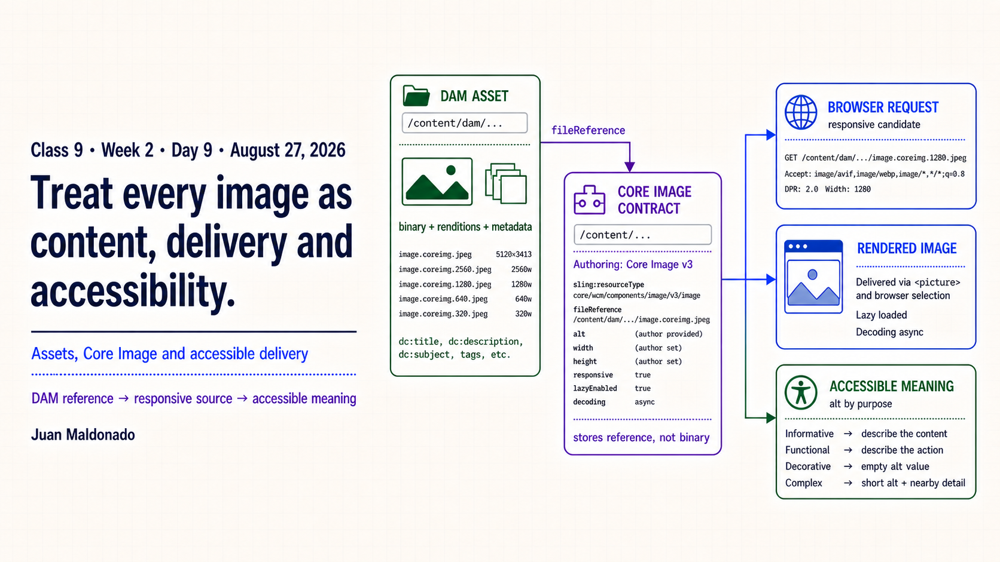
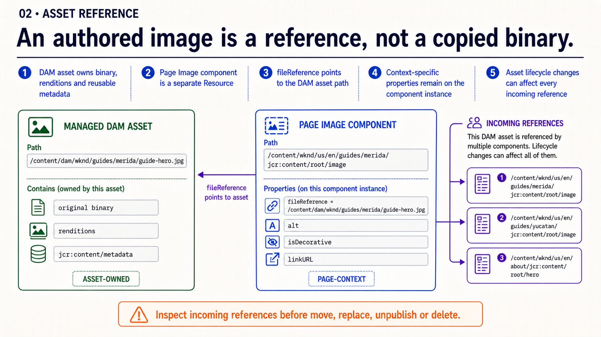
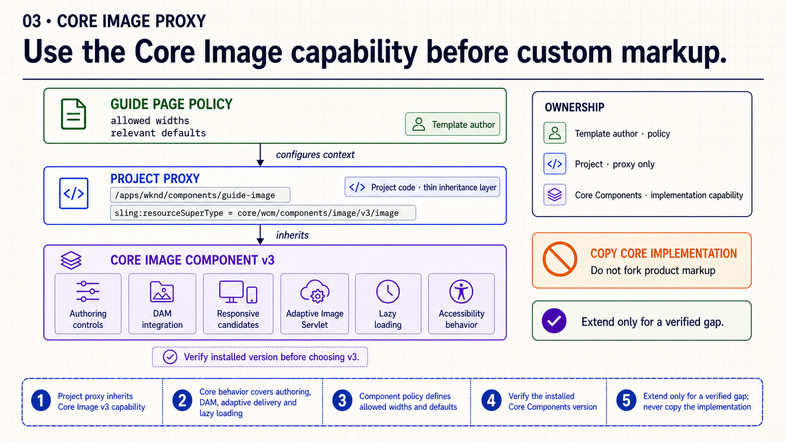
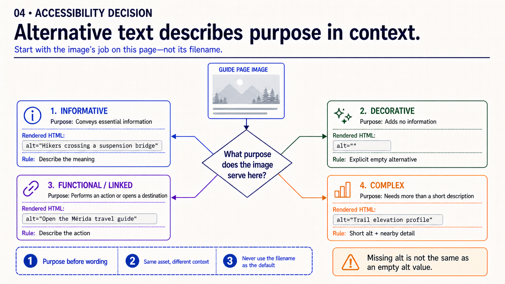
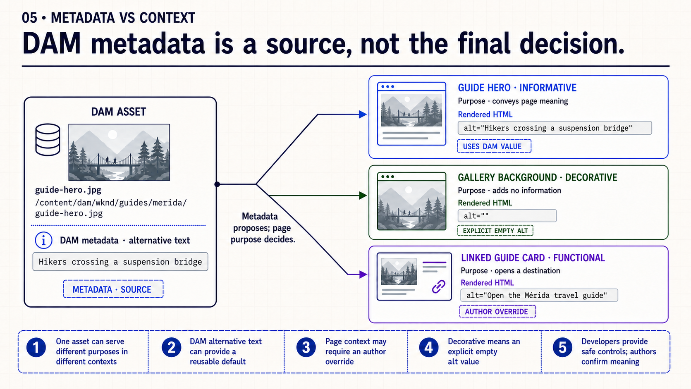
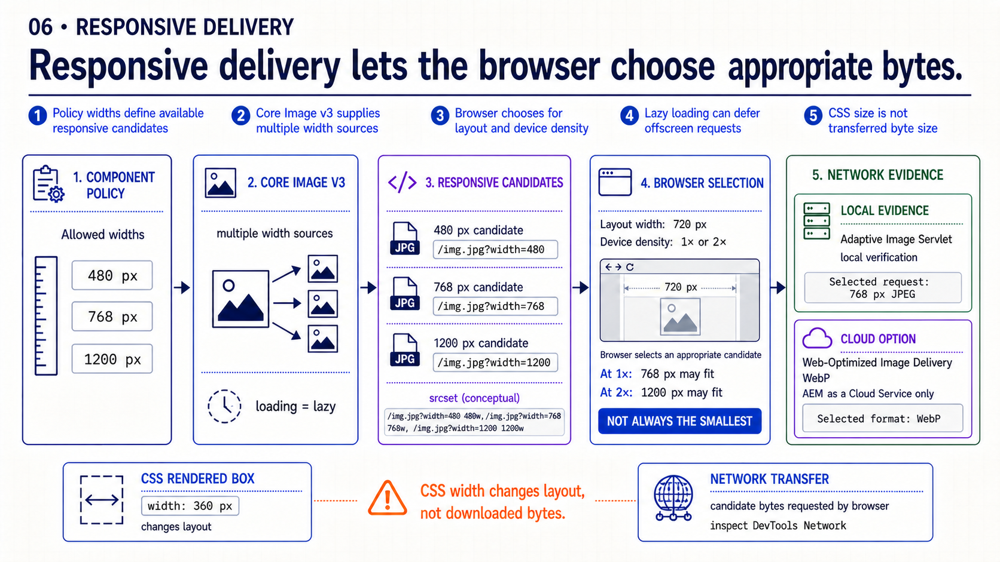
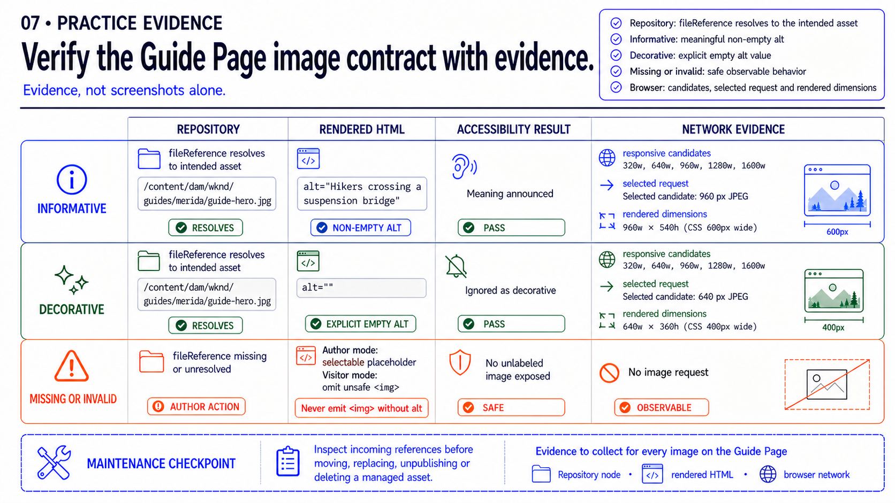
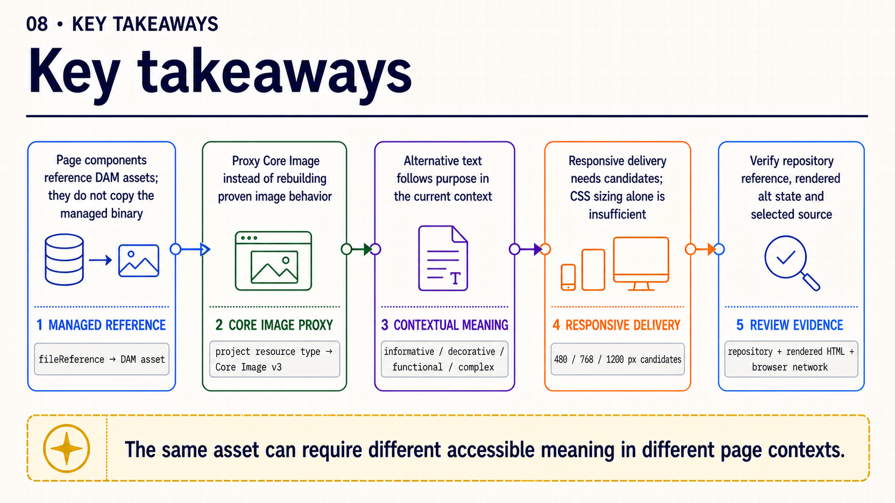
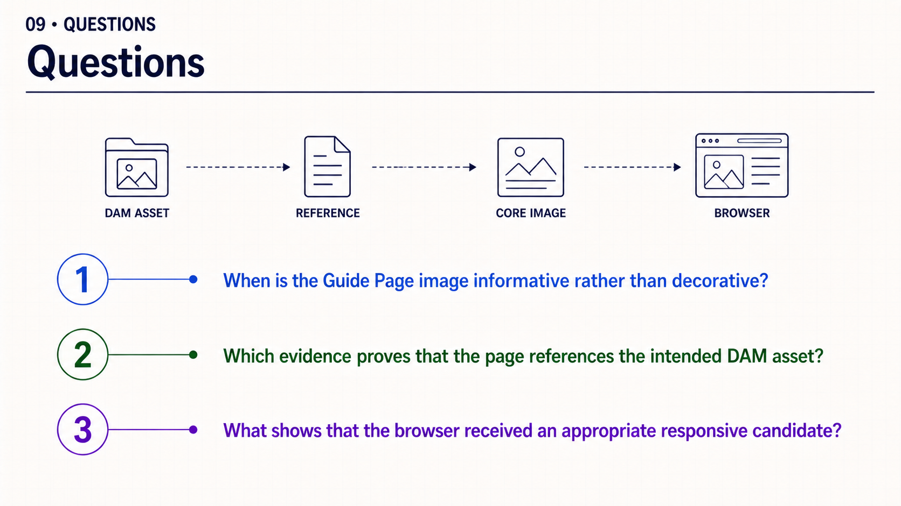

{kind=link}
Open: an authored image is simultaneously managed content, transferred bytes and accessible meaning.
Class 9 · Week 2 · Day 9 · August 27, 2026
Connect a managed DAM reference to Core Image behavior, responsive delivery and contextual alternative text.
fileReference to its DAM asset, justify its alternative-text state and show responsive-delivery evidence in the browser.| Time | Activity | Facilitation |
|---|---|---|
| 0–3 | Retrieval | Ask: “When should an image have an empty alternative text value?” |
| 3–16 | Slides 1–4 | Trace the asset reference, Core Image proxy and purpose-based alternative-text decision. |
| 16–24 | Slides 5–7 | Compare metadata with context, inspect responsive delivery and review Guide Page evidence. |
| 24–27 | Slide 8 | Retrieve the five image-contract checkpoints. |
| 27–30 | Slide 9 | Questions only; no live demonstration dependency. |
Choose Copy slide as image and paste it into PowerPoint, download an individual PNG, or download the complete PPTX.

Open: an authored image is simultaneously managed content, transferred bytes and accessible meaning.

Separate: the DAM asset owns binary and metadata; the page Resource owns contextual properties.

Reuse: keep the project proxy thin and extend only for a verified requirement gap.

Decide: begin with the image's purpose on this page, not its filename.

Compare: metadata proposes a value; page purpose determines the final alternative.

Inspect: CSS controls layout, while candidates and network requests determine transferred bytes.

Verify: connect repository, HTML, accessibility and network evidence instead of relying on screenshots alone.

Retrieve: follow the five checkpoints from managed asset to verified browser output.

Close: use purpose, repository evidence and browser evidence in each answer.
The complete English talk track is available in speech.md.
fileReference and the resolved DAM asset.alt state for valid and missing or invalid authoring states.Practice bridge: use this evidence in Week 2 · Create the Guide Page authoring contract. Cloud Manager and a shared deployment are not required.
{kind=link}
{kind=link}
{kind=link}
{kind=link}
{kind=link}
{kind=link}
{kind=link}
{kind=link}